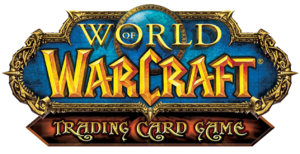

Ta strona wykorzysuje pliki cookies na potrzeby Google Analytics. Pokaż więcej. Google Analytics śledzi odwiedziny stron, to czy użytkownik dotarł do końca strony, pobrania plików i inne. Więcej informacji można znaleźć tutaj policies.google.com/privacy

WoW TCG Polska
Odświeżona polska instrukcja do WoW TCG i poradnik dla nowych graczy
Ta strona wyjaśnia nowemu graczowi jak zacząć grać w World of Warcraft Trading Card Game (WoW TCG) w 2021 roku. Powstała, ponieważ sam niedawno zacząłem przygodę z WoW TCG i zauważyłem, że początek jest trudny.
Jesteś w dobrym miejscu jeżeli spełniasz przynajmniej jeden warunek:
Chcesz się dowiedzieć co to jest WoW TCG
Interesuje Cię instrukcja do WoW TCG po polsku
Nie masz kart i chcesz się dowiedzieć skąd wziąć karty do WoW TCG
Masz karty i chcesz się dowiedzieć jak zacząć grać w WoW TCG
Grałeś w Hearhstone i chcesz się dowiedzieć czym się różni Hearthstone od WoW TCG
Nie jest to miejsce dla Ciebie jeżeli grałeś w WoW TCG i dobrze znasz zasady.
Q: Co to jest WoW TCG?
A: World of Warcraft Trading Card Game to w skrócie gra karciana podobna do Hearthstone, ale do gry używa się fizycznych kart.
Talia składa się z jednej karty bohatera, oraz 60 kart sojuszników, zaklęć, broni, ekwipunku, questów (zadań), lokacji. Żeby wygrać walkę musisz pokonać przeciwnika, jak w HS. Jest ona na pierwszy rzut oka podobna do HS, ale zawiera mniej losowości i w przeciwieństwie do HS, podczas rundy przeciwnika można wykonywać niektóre akcje. Nie ma tu many takiej jak w Hearthstone, za rzucenie karty płacimy zasobami. Zasobem jest quest lub dowolna karta z talii, którą poświęcamy jako zasób po to żeby móc rzucić inne karty (więcej informacji w instrukcji). Podobnie jak w Hearsthstone musisz kolekcjonować karty, żeby z nich tworzyć talie. Zdobywa się je poprzez kupowanie poszczególnych kart od innych graczy, wymienianie się, kupowanie gotowych zestawów kart lub tzw. boosterów, czyli paczek 15 losowych kart.
W tym filmiku możesz znaleźć nieco więcej informacji ogólnych: YouTube - opis WoW TCG
Q: Czego potrzebuję żeby zacząć grać?
A: Żeby rozegrać podstawową walkę 1v1 potrzebujesz:
Dwóch graczy
Dwie talie kart, po 60 kart (na początek może być po 30 kart ze Starter Decków)
Jeżeli chcesz grać prawdziwymi kartami to najprostszym sposobem jest kupienie dwóch nowych zestawów kart do nauki na początek "Heroes of Azeroth: Starter Deck" z 2006 roku. Oryginalnie zapakowane zestawy są nadal w sprzedaży w polskim: sklepie ISA. Czasami można je również znaleźć na OLX, Gumtree itp.
Inną opcją jest zakupienie Class Starter Deck z lat 2010-2013. Są to talie przygotowane przez twórców WoW TCG i składają się z nowszych karty niż Heroes of Azeroth. Tutaj znajduje się lista talii i kart z których się one składają: Class Starter Deck Lists
Używane Class Starter Decki można czasami znaleźć na OLX, Allegro, Gumtree itp.
Używane lub nowy zestawy karty można znaleźć na międzynarodowej platformie do sprzedaży kart CardMarket.com lub na eBay.
Jeśli nie uda Ci się znaleźć takiego gotowego class starter decku (obecnie nie ma ich zbyt wiele na rynku, a jeśli są to zazwyczaj bardzo drogie) to możesz spróbować sam złożyć zestaw z pojedynczych karty wyszukując ich na platformie cardmarket. Są tam również sprzedawcy z Polski, którzy będą gotowi złożyć taki zestaw dla Ciebie.
Gdy już nabędziesz doświadczenia i będziesz potrzebował nowych kart do złożenia swojej talii od zera najbardziej użyteczną stroną jest cardmarket, gdzie możesz znaleźć mnóstwo kart. Oprócz tego warto śledzić ogłoszenia na OLX itp.
Q: Jak poznać zasady gry?
A: Jeżeli już masz dwóch graczy i dwie talie kart to polecam zacząć od tego filmiku przedstawiającego podstawowe zasady gry: WoW TCG - podstawowe zasady
Jest on po angielsku, ale można włączyć automatycznie tłumaczone napisy po polsku (Opcje -> Subtitles -> Auto-Translate -> Polish)
Po tym proponuję przejrzeć instrukcję, żeby wiedzieć gdzie później szukać informacji.
Ciężko jest wszystko zapamiętać na raz bez praktyki, więc teraz polecam spróbować zagrać kilka gier. Podczas pierwszych rozgrywek będzie wiele wątpliwości. Wtedy należy zaglądać do instrukcji lub wracać do filmiku.
Q: Skąd wziąć instrukcję?
A: Jeżeli dobrze znasz angielski to na początek polecam instrukcję dodawaną do zestawu startowego "Heroes of Azeroth": wow cardgame_uk.pdf
Są one dobre na początek, ale gdy będziesz korzystać z nowszych kart lub będziesz trafiał na sytuacje, których podstawowa instrukcja nie opisuje musisz skorzystać z angielskojęzycznej oficjalnej instrukcji (WoW TCG Comprehensive Rules version 7.4) z 2013 roku: wow_cr_v7.4_130723.pdf
Q: Co to jest odświeżona wersja polskiej instrukcji do WoW TCG?
A: Można ją pobrać tutaj: WoW-TCG-polska-instrukcja-2021.pdf
Powstała ona poprzez przeformatowanie tłumaczenia przygotowanego przez firmę ISA (WoW-TCG-Instrukcja-PL.pdf) tak żeby bardziej przypominało oryginalną, angielską instrukcję. Dzięki temu lepiej nadaje się do wydruku na drukarce oraz jest bardziej przejrzysta.
Q: Czy gra WoW TCG jest martwa?
A: I tak i nie.
Od 2013 roku nie są wypuszczane nowe oficjalne karty, więc oficjalnie WoW TCG jest martwe, a jego rolę przejął Hearthstone.
Jednak jest duża ilość graczy posiadających oryginalne karty i chętna na granie w różnych formatach gry - dla zabawy oraz na turniejach. Gry mogą odbywać się lokalnie (rzadziej) i online za pośrednictwem strony www.untap.in, która pozwala na granie w gry karciane w przeglądarce. Można ich znaleźć na Discordzie
Istnieje również polski discord, ale niestety nie ma on zbyt wielu członków.
Polski fanpage nieżyjącej już strony wowtcg.pl, gdzie raz na jakiś czas wrzucane są posty o lokalnych turniejach: facebook.com
Prowadzony jest również projekt WoW TCG Reborn, gdzie społeczność fanowska tworzy nowe karty i organizuje turnieje, jednak polecam się tam udać dopiero po tym jak zapoznasz się z grą przy użyciu oryginalnych kart.
Jeśli szukasz karcianki, która jest oficjalnie wspierana, ma dużą społeczność i są często organizowane turnieje itp. to WoW TCG nie jest dla Ciebie.
Q: Po co w ogóle zaczynać grę w WoW TCG w 2021 roku?
A: Przede wszystkim dla zabawy. Oprócz tego:
Czasami odbywają się turnieje lokalne, ale ostatnio, zwłaszcza przez pandemię, rzadko.
Odbywają się turnieje online, przez platformę untap.in, patrz na międzynarodowy discord.
Q: Czy da się grać w WoW TCG na komputerze?
A: Tak, ale nie polecam tego na początek, bo gra się dużo przyjemniej prawdziwymi kartami.
Żeby zagrać w WOW TCG na komputerze stwórz konto na untap.in
Znajdź drugiego gracza chętnego do gry, np. na Discordzie
Q: Czy można grać w więcej niż dwóch graczy?
A: Tak.
Można grać drużynowo np. 2vs2 , 3vs3 itd.
Można również grać w trzech graczy przeciwko Dungeonom, są trzy dostepne (Deadmines, Scarlet Monastery i Shadowfang Keep). Wygląda to tak, że gracie w trzyosobowej drużynie przeciwko talii Dungeon. Nie potrzeba czwartej osoby do kierowania tą talią, ona "gra sama z siebie".
Można również grać w czterech graczy grając z talią rajdową. Tutaj trzech graczy kontroluje bohaterów, a jeden gracz kontroluję talię rajdu. (Onyxia's Lair, Molten Core, Magtheridon's Lair, Black Temple, Naxxramas, Assault on Icecrown Citadel, Battle of the Aspects, The Caverns of Time).
Talie rajdów i dungeonów są jednak trudno dostępne do kupienia w Polsce, można próbować szukać na CardMarket lub na eBayu, ale trzeba się liczyć z wygórowanymi cenami. Wyjątkiem od tej reguły jest rajd Onyxia Lair, którą można kupić dość tanio
Q: Jakie są formaty gry?
Najpierw zapoznajmy się z blokami i dodatkami. Karty wychodziły w kolejnych dodatkach. Dodatki składają sie na poszczególne bloki. Na dole każdej karty jest napisane do jakiego dodatku należy. Szczegółowa rozpiska kart znajduje się na wowcards.info
Heroes of Azeroth Block
Heroes of Azeroth (2006)
Through the Dark Portal (2007)
Fires of Outland (2007)
March of the Legion Block
March of the Legion (2007)
Servants of the Betrayer (2008)
The Hunt for Illidan (2008)
Drums of War Block
Drums of War (2008)
Blood of Gladiators (2009)
Fields of Honor (2009)
Scourgewar Block
Scourgewar (2009)
Wrathgate (2010)
Icecrown (2010)
Worldbreaker Block
Worldbreaker (2010)
War of the Elements (2011)
Twilight of the Dragons (2011)
Aftermath Block
Throne of the Tides (2011)
Crown of the Heavens (2012)
Tomb of the Forgotten (2012)
Timewalkers Block
War of the Ancients (2012)
Betrayal of the Guardian (2013)
Reign of Fire (2013)
Jest kilka formatów gry. Format gry opisuje jakie karty mogą być używane w twojej talii. Najpopularniejsze formaty opisane skrótowo to:
Contemporary - można używać karty z bloku Worldbreaker i nowszych, czyli Aftermath i Timewalkers i każdych kolejnych dodatków (gdyby takie powstawały). Obowiązuje banlista, czyli lista kart zakazanych
Block - można używac kart z najnowszego bloku, czyli obecnie Timewalkers.
Core Constructed - można używać karty z dwóch najnowszych bloków, czyli obecnie Aftermath i Timewalkers
Classic - wszystkie karty dozwolone.
Więcej formatów i szczegółowych zasad jest dobrze opisanych na stronie polter.pl tutaj i tutaj.
Q: Co to jest WoW TCG Reborn?
A: WoW TCG zakończył swój żywot wraz z narodzinami Hearthstone w 2013 roku. Społeczność w odpowiedzi stworzyła fanowski projekt WoW TCG Reborn w 2019 roku. W ramach tego projektu:
• organizowane są turnieje online
• tworzone są nowe zestawy kart, w tym nowe rajdy
Znalazłeś błąd? Chcesz coś dodać? Napisz poniżej, stwórz issue na GitHub (pull requesty mile widziane) lub napisz maila na kpastew@gmail.com
World of Warcraft in all forms is copyright and trademark Blizzard Entertainment, Inc. which has no affiliation with this website. This site is for non-profit use only.
World of Warcraft we wszystkich formach jest chroniony prawem autorskim i znakiem towarowym Blizzard Entertainment, Inc., który nie jest powiązany z tą stroną. Ta witryna jest przeznaczona wyłącznie do użytku non-profit.